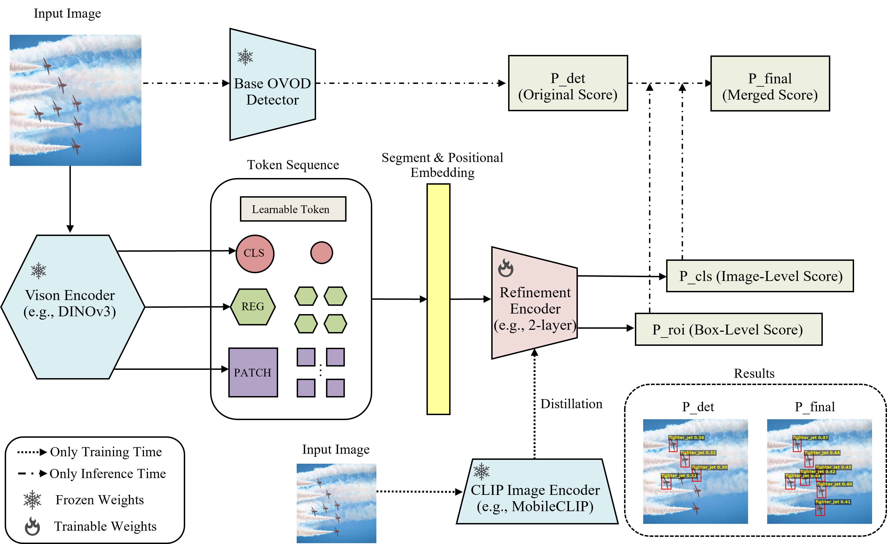
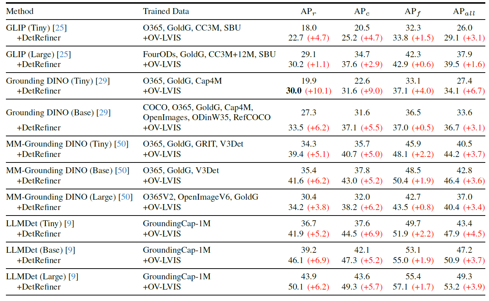
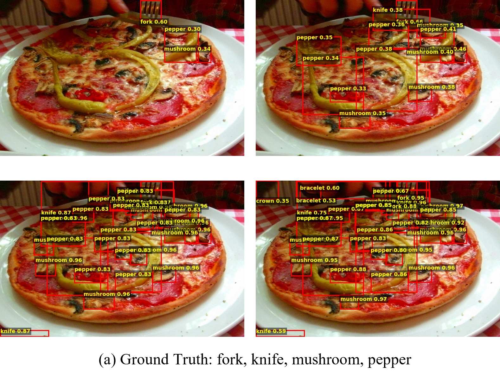
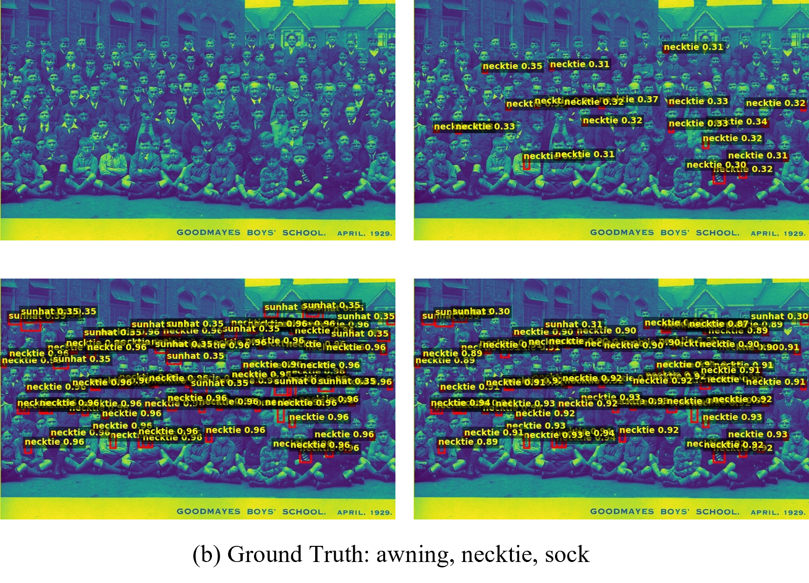
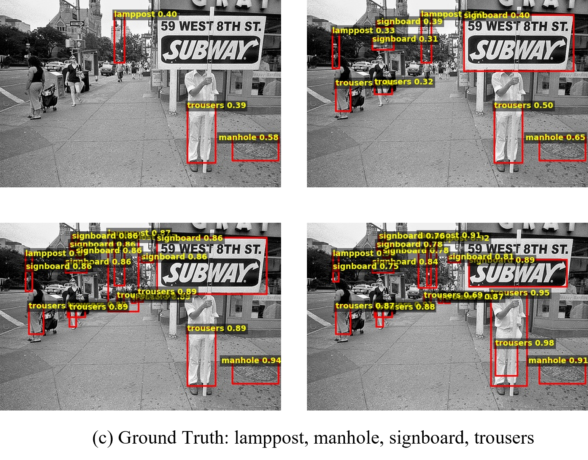
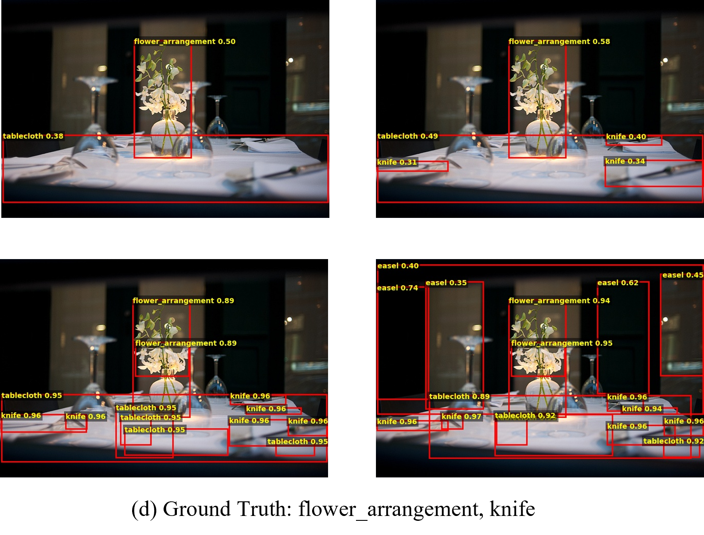

CVPR 2026 Findings
The process of refining object detection results with DetRefiner consists of three steps:

DetRefiner has the following inference characteristics:
DetRefiner consistently improves the performance of various models under zero-shot or cross-domain settings on datasets such as COCO, LVIS, Pascal VOC, and ODinW-13. The evaluation uses four types of base detectors—GLIP, MM-Grounding DINO, Grounding DINO, and LLMDet—with varying model sizes. The following table shows the results on LVIS.

Four qualitative comparisons of detection results before and after applying DetRefiner.




@article{okazaki2026detrefiner,
title={DetRefiner: Model-Agnostic Detection Refinement with Feature Fusion Transformer},
author={Okazaki, Soichiro and Sasaki, Tatsuya and Ohashi, Hiroki},
journal={arXiv preprint arXiv:2605.10190},
year={2026}
}